<!DOCTYPE html>
<html>
    <head>
        <meta charset="utf-8">
        <meta name="apple-mobile-web-app-capable" content="yes" />
        <meta name="apple-mobile-web-app-status-bar-style" content="black-translucent" />
        <meta name="viewport" content="width=device-width, initial-scale=1.0, maximum-scale=1.0, user-scalable=no">

        <title>Tire ton langage</title>
        <link rel="stylesheet" href="reveal/css/reveal.css">
        <link rel="stylesheet" href="reveal/css/theme/microalg.css" id="theme">

        <!-- If the query includes 'print-pdf', use the PDF print sheet -->
        <script>
            document.write( '<link rel="stylesheet" href="reveal/css/print/' + ( window.location.search.match( /print-pdf/gi ) ? 'pdf' : 'paper' ) + '.css" type="text/css" media="print">' );
        </script>

        <!--[if lt IE 9]>
        <script src="reveal/lib/js/html5shiv.js"></script>
        <![endif]-->

        <script type="text/javascript" src="http://ajax.googleapis.com/ajax/libs/jquery/1.8.2/jquery.min.js"></script>
        <script>window.jQuery || document.write('<script src="jquery.min.js"><\/script>')</script>
        <link rel="icon" href="img/logo_microalg.ico" />

        <script type="text/x-mathjax-config">
        MathJax.Hub.Config({
            extensions: ["tex2jax.js","fp.js"],
            MathMenu: {
                showLocale: false,
            },
            jax: ["input/TeX","output/HTML-CSS"],
            tex2jax: {
                inlineMath: [['$','$']],
                displayMath: [['$$','$$']],
                }
            });
        </script>
        <script type="text/javascript" src="mathjax/MathJax.js?locale=fr"></script>
    </head>

    <body>
        <div class="reveal">
            <div class="slides">
                <section data-markdown data-separator="^\n----*\n" data-vertical="^\n\n" data-charset="utf-8">

                    <script type="text/template">
&nbsp;

# Tire ton langage de programmation

&nbsp;

&nbsp;

&nbsp;

<div style="text-align: right; font-size: 75%;">9 avril 2026</div>
<div style="text-align: right;">Lycée Carcouët à Nantes</div>

---

# Qu’est-ce ?

* **séquence d’instructions**
    * langage machine, assembleur, C, Java, Python, C#, PHP…
* **données structurées**
    * HTML, XML, CSS…
* la **structure des données du programme** et **leurs relations** entre elles ou avec l’extérieur
    * les langages « orientés objet » (C++, Java, Python, C#…)
    * ou les langages fonctionnels (certains Lisp, Haskell, Caml…)
* des **requêtes** (SQL, Prolog, expressions régulières…)
* …

---

# Les plus connus

<div class="nocenter">
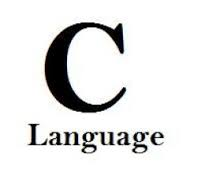
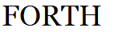
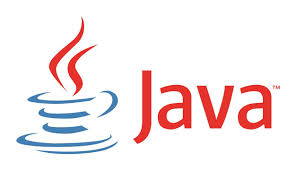
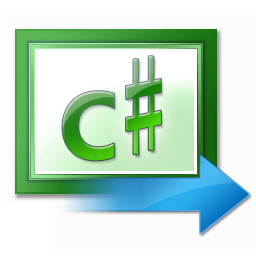
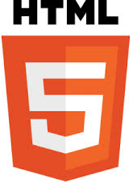
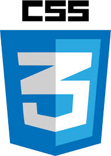
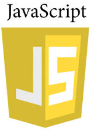
<br>


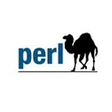

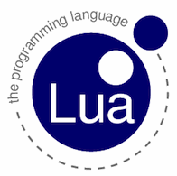
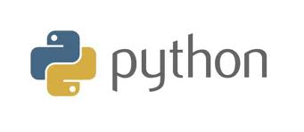
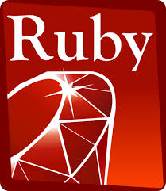
<br>


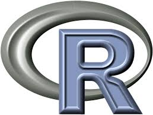
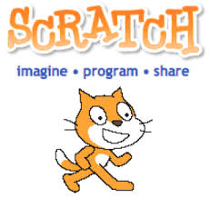


---

# Un peu d’histoire

* Mécanique
    * Charles Babbage et Ada Lovelace
    * CB : Architecte de la Machine Analytique
    * AL : La première personne à programmer

---

# Ada Lovelace


---

# La machine analytique

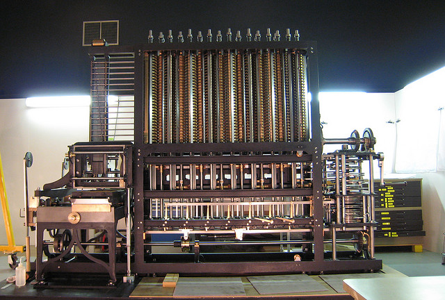

---

# La machine analytique

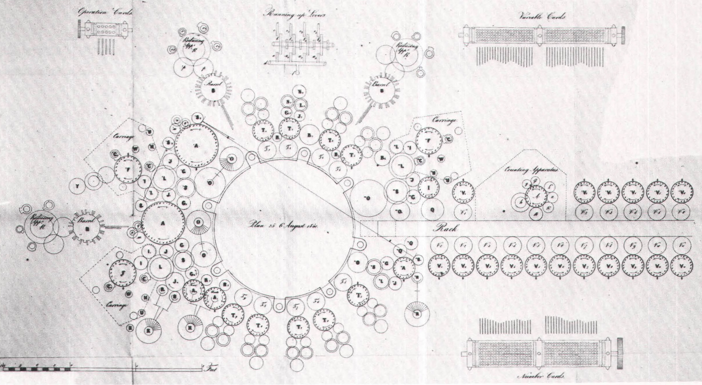

---

# Un peu d’histoire

* Mécanique
* Électrique/Électronique
    * Câbles
    * Transistors
    * Micro-processeurs

---

# ENIAC


---

# Grace Hopper


---

# Grace Hopper

À partir de 1957, […] elle défend l'idée qu'un
programme **devrait pouvoir être écrit dans un langage proche de l'anglais**
plutôt que d'être calqué sur le langage machine, comme l'assembleur.

<div style="text-align: right; font-size: 75%;">Wikipedia</div>

---

# Générations de langages

* Première génération
    * le **langage machine**
    * instructions sous forme de **suites de 0 et de 1**
    * telles qu'elles vont être exécutées par un processeur
    * **propres à chaque type de processeur**

---

# Générations de langages

* Deuxième génération
    * le langage de type **assembleur** (depuis 1955)
    * instructions forme **alphanumérique** (lettres et chiffres)
    * sur le processeur *6502*, `01101001` s'écrira `LDA` et correspond à une
      opération *load accumulator*
    * langages **encore très liés au type de processeurs**

---

# Générations de langages

* Troisième génération et générations suivantes
    * langages dits **de haut niveau**
    * plus proches des **langues naturelles**, mais très structurés
    * peuvent s’exécuter sur **différents types de processeurs**
        * compilation
        * ou interprétation
        * ou un savant mélange des deux

---

# Langages ésotériques / exotiques

* Au 27 mars 2016, il y avait 1053 langages proposée par
  [esolangs.org](https://esolangs.org/wiki/Language_list).
* Aujourd'hui dix ans plus tard il y en a presque 4000.

---

# Intercal

    DO ,1 ← #13
    PLEASE DO ,1 SUB #1 ← #238
    DO ,1 SUB #2 ← #108
    DO ,1 SUB #3 ← #112
    DO ,1 SUB #4 ← #0
    DO ,1 SUB #5 ← #64
    DO ,1 SUB #6 ← #194
    DO ,1 SUB #7 ← #48

---

# Intercal

* considéré comme le **premier langage ésotérique** (1972)
* **tourne en dérision** certains langages de l'époque
* son nom est une blague :  
  *The full name of the compiler is « Compiler Language With No Pronounceable
  Acronym » which is, for obvious reasons, abbreviated « INTERCAL ».*
* dans le manuel d'INTERCAL des instructions **paradoxales ou insensées** :  
  *Attention ! Ne confondez en aucune circonstance la grille avec l'opérateur
  d'interpolation, excepté en cas de circonstances pouvant porter à confusion !*

---

# ArnoldC

* N’apporte pas un concept nouveau,
* traduit littéralement un langage classique comme le C.
* Il y a beaucoup de langages ésotériques de ce genre,
* il est très facile de fabriquer le vôtre.

---

# ArnoldC

    MethodArguments
      I NEED YOUR CLOTHES YOUR BOOTS AND YOUR MOTORCYCLE
    Return
      I'LL BE BACK
    EndMethodDeclaration
      HASTA LA VISTA, BABY
    CallMethod
      DO IT NOW
    AssignVariableFromMethodCall
      GET YOUR ASS TO MARS

---

# Shakespeare

* Les programmes ressemblent à une **pièce de théâtre**.
* Les **personnages** de la pièce correspondent aux **variables**.
    * (personnages de Shakespeare uniquement, comme *Romeo*, *Juliet*, *Hamlet*…)
* Ensemble d'**actes** et de **scènes**.
* Valeurs :
    * Chaque nom correspond à une constante 1 s'il est joli, -1 sinon.
        * `flower`, `joy` ou `angel` vaudront 1 ; `devil`, `bastard` ou `death`
          vaudront -1.
        * Tout adjectif précédant un nom le multipliera par deux.
    * Ainsi, la phrase suivante :  
      *« a charming cute golden flower and the silly beggar »*  
      aura la valeur de 6 (2³×1+2×(-1)).
* `Speak your mind` affiche le caractère contenu dans la variable (personnage)
  qui parle.
* **Chef** propose le même concept, avec des recettes de cuisine.

---

# BrainF*

* Langage de programmation **minimaliste** (1993).
    * Objectifs :
        * un langage de programmation **simple** (donc **difficile** !!!),
        * et dont le compilateur aurait la taille la plus réduite possible.
* Le langage possède seulement huit instructions :  
  `>` `<` `+` `-` `.` `,` `[` `]`
* Deux descendants notables : *Whitespace* et *Ook!*.
    * Reprennent les instructions de BF, mais codées par :
        * des espaces ou tabulations pour le Whitespace,
        * des combinaisons de `Ook?` `Ook.` `Ook!` (par paires car 3²=9).

---

# Whitespace

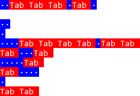

---

# Ook!

    Ook. Ook. Ook. Ook. Ook. Ook. Ook. Ook. Ook. Ook.
    Ook. Ook. Ook. Ook. Ook. Ook. Ook. Ook. Ook! Ook?
    Ook. Ook? Ook. Ook. Ook. Ook. Ook. Ook. Ook. Ook.
    Ook. Ook. Ook. Ook. Ook. Ook. Ook. Ook. Ook. Ook?
    Ook. Ook. Ook. Ook. Ook. Ook. Ook. Ook. Ook. Ook.
    Ook. Ook. Ook. Ook. Ook. Ook. Ook. Ook. Ook. Ook.
    Ook. Ook. Ook. Ook? Ook. Ook. Ook. Ook. Ook. Ook.
    Ook. Ook. (...)

---

# Befunge

     >78*vD
    v$_#>vN
    7#!@  A
    3 :v??v
    9,-""""
    4+1ACGT
    +,,""""
    >^^<<<<

* Considéré comme le premier langage représenté en deux dimensions.
* Se lit en se déplaçant dans le tableau de caractères en suivant les
  « flèches » :  
  `>` `<` `^` `v`

---

# Piet

* C’est le prénom du peintre **Mondrian**.
* Langage plus ou moins dérivé de Befunge, où les instructions sont codées par
  des **couleurs**.
* Sur les trois programmes ci-dessous, un écrit « Piet » à l’écran.


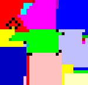


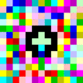


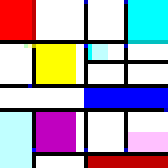

---

# Malbolge

* Conçu pour être **impossible** à utiliser.
* Bien sûr, certains ont essayé de les utiliser quand même !
    * Si difficile à comprendre qu'il a fallu attendre deux ans un premier
      programme.
    * Même pas été écrit par un être humain : généré par un algorithme de
      recherche par faisceaux.

---

# Malbolge

    (=<`:9876Z4321UT.-Q+*)M'&%$H"!~}|Bzy?=|{z]KwZY44Eq0/{mlk**
    hKs_dG5[m_BA{?-Y;;Vb'rR5431M}/.zHGwEDCBA@98\6543W10/.R,+O<

---

# Questions ?

</script>
                </section>
            </div>
        </div>

        <script src="reveal/js/reveal.js"></script>

        <script>
            // Full list of configuration options available here:
            // https://github.com/hakimel/reveal.js#configuration
            Reveal.initialize({
                controls: true,
                help: true,
                progress: true,
                slideNumber: true,
                history: true,
                center: false,

                theme: Reveal.getQueryHash().theme, // available themes are in /css/theme
                transition: Reveal.getQueryHash().transition || 'none', // default/cube/page/concave/zoom/linear/fade/none

                // Optional libraries used to extend on reveal.js
                dependencies: [
                    { src: 'reveal/lib/js/classList.js', condition: function() { return !document.body.classList; } },
                    { src: 'reveal/plugin/markdown/marked.js', condition: function() { return !!document.querySelector( '[data-markdown]' ); } },
                    { src: 'reveal/plugin/markdown/markdown.js',
                        condition: function() { return !!document.querySelector( '[data-markdown]' ); },
                        // All list items are fragments, thanks to
                        // http://stackoverflow.com/questions/13705848/fragments-in-reveal-js-using-markdown?rq=1#15354240
                        callback: function() {
                            Array.prototype.forEach.call(document.querySelectorAll('ul > li, ol > li'),
                            function(ele){ if (ele.className != 'nofragment') ele.className = 'fragment';});
                        } },
                    { src: 'reveal/plugin/zoom-js/zoom.js', async: true, condition: function() { return !!document.body.classList; } },
                    { src: 'reveal/plugin/notes/notes.js', async: true, condition: function() { return !!document.body.classList; } },
                    { src: 'reveal/plugin/math/math.js', async: true }
                ],
                math: {
                        mathjax: 'mathjax/MathJax.js',
                        config: 'TeX-AMS_HTML-full'},
                minScale: 1,
                maxScale: 1
            });
        </script>
    </body>
</html>
